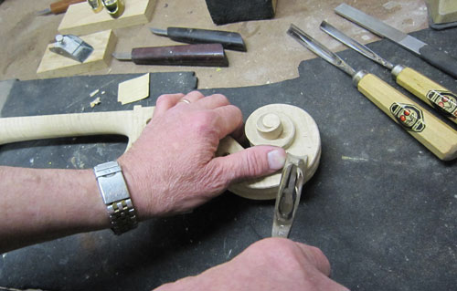

Welcome to Schubert Strings the bowed instrument repair shop.
In our workshop we do any kind of instrument repairs/restorations such as cracks, peg box restoration, sound post patch, fingerboard dressing, peg fitting, bridges – regular and adjustable, graduation, base bars, bow rehairing, bow recamber, silver winding, and professional set up.
We will repair and restore: – Violin, Viola, Cello, Double Bass and Bows.
While restoring old instruments, we’ve been able to see the working marks left by the makers. By studying these instruments we can see into the working traditions of the 17th and 18th century German, French and Italians. All repairs are done to concern artist quality level.
Any work we do, we do with great care, individuality and attention. We always take the time to talk to you to let you know our professional opinion and the most cost effective options to restore your instrument.
We repair/restore older instruments and bows. Also, we serve musicians and music students by offering our knowledge and expertise. Instruments and bows evaluations for repair are done free of charge. When you’re happy…We’re happy.
Please also see Our Commitment section of this website.
